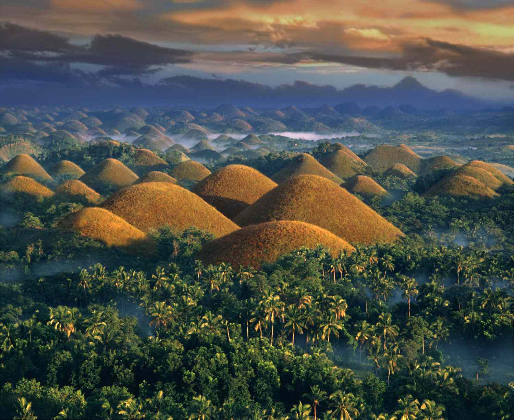

Boracay
This destination is a good spot for tourists who want to relax at the beach!
Click here to find out more!
Intramuros
Intramuros is one of the most important places, known for it's history, it was built during the Spanish Colonization and was used as a base for the military.
Click here to find out more!
Bohol
Bohol is known for it's nature, and wildlife. An example are the Chocolate Hills, the beaches, and the Tarsiers!
Click here to find out more!Puerto Princesa
Puerto Princesa is a vast place which holds the Subterranean River Park, Plaza Cuartel, and Nagtabon Beach!
Click here to find out more!